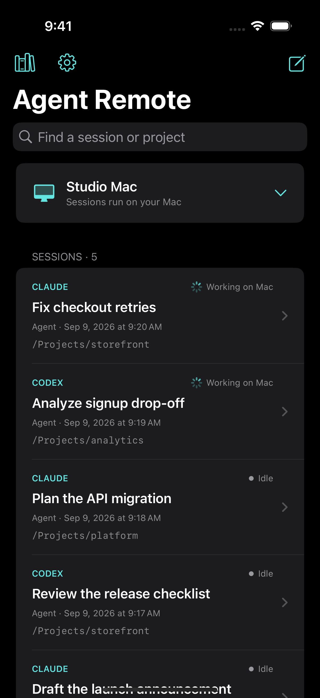

Agent Remote for Mac
Runs your agents and builds your local knowledge base in the background.
Download for Mac Universal Mac app · Apple silicon + IntelMAC + IPHONE · EARLY RELEASE
Start and manage Claude and Codex sessions from your phone without interrupting the work already running. Each agent can use your Mac’s files, tools, connected accounts, and a shared knowledge base that grows as you work.
More tasks in parallel. Less context to repeat.
Get Agent Remote A Mac app and its iPhone companion.~/Projects/storefront
$ claude
❯ Fix the checkout retry behavior. Use the payment conventions from our API migration session.
Searching shared knowledge…
Found: Payments & checkout
Retries should reuse the original idempotency key. A timeout should leave the order pending.
✓ Updated the retry handler
✓ Preserved the API response format
✓ Added a regression test
Checking the timeout case…

01 / START THE NEXT TASK
You already have an agent working. Now you want a second one to investigate something else. Open a new Claude or Codex session from your phone, leave the first task running, and manage both in one place.
“All I want to do is start a new conversation with fresh context without deleting the current one.”
A developer describing their remote-session workflow on Reddit ↗
Choose Claude or Codex and start a conversation. Your Mac runs the agent with your existing accounts and tools.
Search your sessions, read replies and tool activity, send follow-ups, and interrupt or end tasks.
Use local projects and files, configured tools, and connected accounts. Browser access uses your signed-in tabs once the required Mac permissions are enabled.
02 / KEEP WHAT YOU’VE LEARNED
You explained the architecture to Claude. You made a decision with Codex. The next agent should be able to find that context. Agent Remote automatically turns what you discuss into a local, searchable knowledge base about you and your work—shared across sessions and providers.
“The annoying part is having to re-explain the same context every time. I usually paste notes over manually, but it gets old fast.”
A developer switching between Claude Code and Codex on Reddit ↗
No separate note-taking routine or “remember this” prompts. A background worker extracts useful context from your conversations.
Claude and Codex can draw on the same local library. A decision from one conversation can help inform the next.
Browse knowledge pages and their source evidence. Save a useful reply explicitly, or forget learned notes you don’t want kept.
The library is stored locally. Learning and recall use your model providers; relevant excerpts are sent to them and consume provider usage.
SETUP
Agent Remote lives in your menu bar. Connect your existing Codex or Claude Code account. It runs your sessions and maintains your local knowledge base.
Open the iPhone app and scan the pairing QR code on your Mac. No VPN, port forwarding, or server address to type.
Choose Claude or Codex and send your first task. Add more sessions whenever you need them. Keep the Mac awake, online, and running Agent Remote.
UNDER THE HOOD
GET AGENT REMOTE
You’ll need both apps. Install on your Mac first, then pair your iPhone.
Runs your agents and builds your local knowledge base in the background.
Download for Mac Universal Mac app · Apple silicon + IntelStart sessions, manage ongoing work, and browse what you’ve learned.
iPhone release being preparedNo public TestFlight or App Store release yet. Requires iOS 17+.Early software. Start with a project you’re comfortable testing on.